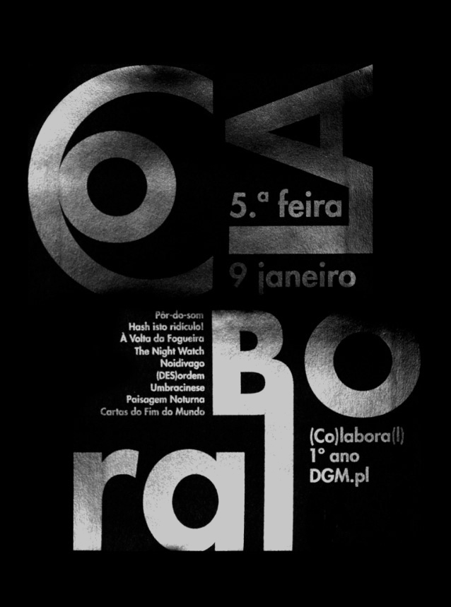

(CO)LABORA(L) – práticas de pensamento projectual em torno do espaço e da comunidade do período pós-laboral da esad.cr.
É já na noite da próxima 5ª feira, dia 9 de Janeiro, que se realiza a 3ª edição do projecto (CO)LABORA(L) – práticas de pensamento projectual em torno do espaço e da comunidade do período pós-laboral da ESAD.CR. O evento é realizado pelo 1º ano do curso pós-laboral de Design Gráfico e Multimédia através de um conjunto de intervenções espalhadas pelo campus que pretendem partilhar a experiência com a restante comunidade da escola das particularidades de habitar este espaço durante o período noturno. O que nos propomos pensar é até que ponto a invisibilidade, a informalidade, o silêncio, a escuridão, entre outras características da nossa experiência pós-laboral, podem servir como inspiração para outras formas de estarmos juntos à volta da prática pedagógica que nos reúne. Convidamos todos a descobrir os projectos, as emoções e o calor do encontro que decidimos criar para vocês na noite fria que nos é habitual.